December 2024
Submitted this for my computational physics final project. I spent less time on the writeup than I would have liked to, so I may go back and edit this more. I also remember seeing that a good way to extract the curie temperature is to take the numeric derivative of the M vs. T plot. There should be a sharp peak at the curie temperature, but with some variance. This plot could be fit to some kind of gaussian and you could extract an exact estimate for the curie temp along with an error. This wouldn't take long so I may add it to the code. Additionally my code was kind of dumb in that I regenerated the graphs from simulation every time instead of just saving the data to process after, but I wasn't doing any actually data analysis of the plots, so that wasn't huge. I'll try and add this into the code, which I'll post on my github. Finally, I plan to come back and do a full derivation of the M vs. H curve.
The Monte-Carlo method is an extremely useful computational method that takes advantage of randomness to calculate anything from integrals to financial models. Here, the method is used to simulate a 2D lattice of atoms under a perpendicularly applied magnetic field, each with one unpaired electron. The electrons are free to orient their spin in the orientation of the magnetic field.
We know from electrodynamics that the energy of a dipole \(\boldsymbol{m}\) in a magnetic field, \(\boldsymbol{B} = B\hat{z}\), is \(U = -\boldsymbol{m}\cdot\boldsymbol{B}\). So, if \(\boldsymbol{m}\) and \(\boldsymbol{B}\) point in the same direction, the energy will be the most negative, and thus in the most stable configuration. In fact, there is another contribution to the energy of the lattice: the spin exchange interaction. If we assume that one of the spins is already pointing in the \(\hat{z}\) direction, then the B field due to that dipole will be given by\(^{[4]}\):
\[\boldsymbol{B_{dip}(r)} = \frac{\mu_0 m}{2\pi r^3}\hat{z}\]
Then, a configuration with another neighboring spin, with magnetic dipole \(\boldsymbol{m}\), will again have energy \(U = -\boldsymbol{m}\cdot\boldsymbol{B}\), and U will be minimized when the spins point in the same direction. Logically, it follows that a 2D lattice in a magnetic field would be in its ground state when all of the spins align with the magnetic field. Of course, this is a simplified version of reality: an anti ferromagnet will prefer spins to actually point against each other, in an alternating fashion, though this is not investigated here.
The energy of the lattice will then be:
\[E = -J\sum_{i}\sum_{j \text{ nearest}}\boldsymbol{s_i}\cdot \boldsymbol{s_j} -\sum_{i}g\mu_b\boldsymbol{s_i}\cdot \boldsymbol{B}\]
Where, \(\boldsymbol{s_i}\), \(\boldsymbol{s_j}\), are the magnetic dipoles of the ith and jth spin. J is the exchange interaction constant, \(\mu_b\) is the Bohr magneton, and g is the gyromagnetic ratio. Since the \(\boldsymbol{s_i}\), \(\boldsymbol{s_j}\), and \(\boldsymbol{B}\) are all set to point in the \(\hat{z}\) direction, \(\boldsymbol{s_i}\) is simply taken to be 1 or -1 for spin up and spin down, respectively. From now on \(s_i\) is taken to be a scalar with these values. Since the dipole magnetic field drops off with \(r^3\) it is reasonable to assume that only nearest neighbors have a significant effect on the energy of any one spin.
But, first, an introduction to the 2D Ising model. The actual derivation of the predictions of the model would take many many pages, so it is simply summarized here, the important parts of which are the Curie temperature and the magnetic hysteresis curve.
The most important part of the derivation involves using the Bragg-Williams approximation, which estimates the number of nearest neighbor interactions between like spins in terms of the total number of those spins. Using this approximation, the canonical partition function of the system can then be written in terms of one sum, which allows the method of maximum term to be used. The result of these steps is the following transcendental equation which must be solved graphically:
\[L = \tanh(\frac{\mu_m}{k_bT}B + \frac{\gamma J}{k_bT}L)\]
The solution for this equation is given below for T \(>\) 0 in Figure 1. For T \(\approx\) 0, the solution approaches that of a box centered on the origin. Meaning there is some \(|B_c|\) at which the B field will cause all of the spins to flip at once in an abrupt phase change\(^{[6,10]}\).
As temperature keeps increasing, however, the solution will change drastically. The Curie temperature \(T_c\) is defines as (where \(\gamma\) is the number of nearest neighbors):
\[T_c = \frac{\gamma J}{k_b}\]
and is the point at which the solution for L changes from trivial to unique:
\[L = 0 \text{ }(T < \frac{\gamma J}{k_b})\] \[L = \begin{cases} -L_0 & \\ 0 & \\ L_0 & \end{cases} (T > \frac{\gamma J}{k_b})\]
This means that when \(T > T_c\) the magnetic material will act paramagnetic, and will thus have no hysteresis as B is swept. This is because the L function will only take on the trivial solution for these temperatures\(^{[9]}\).
To solve this problem computationally, a Monte-Carlo solution is
employed. Essentially, the algorithm performs a small "nudge" on the
system and checks the energy. If the energy has decreased, then we have
gotten closer to the ground state, so the state is accepted. However,
even if the energy of the new state is greater than the old state, the
change is still accepted with a probability related to the temperature.
This is done in order to capture the temperature dependence of certain
variables in the system. The specific algorithm is called the
Metropolois Algorithm and is given below\(^{[1]}\):
1. Initialize a 2D array of atoms, each with a random free electron with
spin, \(s = [1,-1]\). The magnitude of
the spin dipole is ignored here, as we are only tracking the sign
difference between spins.
2. Randomly flip one of the spins in the array.
3. Check the total energy of the configuration. Again, only nearest neighbors have to be checked for each spin. Additionally, periodic boundary conditions are employed for the solid, for ease of programming. Define \(\Delta E = E_{new} - E_{old}\)
4. i. if \(\Delta E \leq 0\): keep the change. This is more stable.
4. ii. else: accept the new configuration with a probability (given by the Boltzmann distribution function, as this treatment is inherently classical): \[p(\Delta E) = e^{\left(-\frac{\Delta E}{k_b T}\right)}\]
5. Replace old configuration with new one. Set \(E_{old} = E_{new}\). Repeat steps 1-5 until
solution converges to a satisfactory state.
Using algorithms like this, many problems in solid state physics can be
simulated to get reliable results. Of course, the main drawback of
simulating an entire solid becomes computational power. In the algorithm
just put forward, the number of computations needed for each time step
is at least \(n^2\) for an \(n\times n\) lattice. This quickly becomes
computationally intensive. The package Numba, and efficient programming
was used to partially alleviate time issues, but simulations still took
sometimes almost up to a minute.
Finally, a 2D square lattice was simulated. In this run, 1e6 timesteps were used on a 100x100 atom lattice. The magnetic field was set to 5 Tesla, the exchange constant was set to \(J = 0.00144\) eV, and a value of \(2\mu_b = 0.00011576\) eV/T was used for the Bohr magneton. The temperature was set to T = 20 K. An explanation of these values will ensue later.
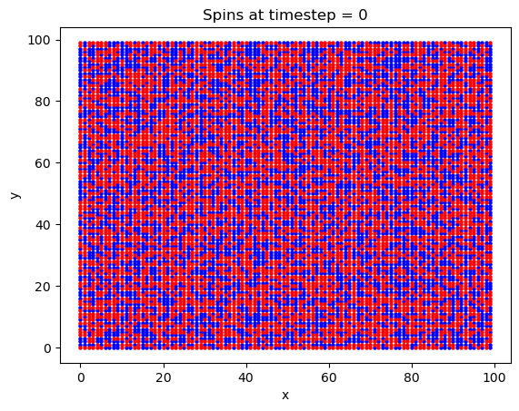 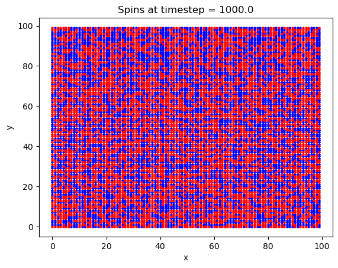 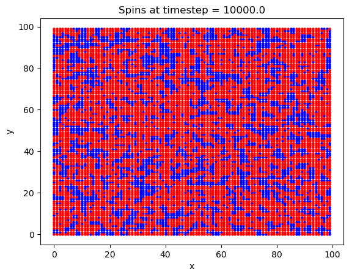 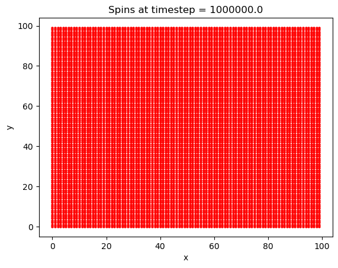 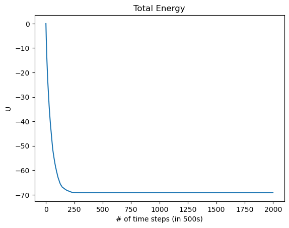
What is interesting with this plot is the emergence of domains at around the 10,000th timestep. Domains are favorable here because of the exchange interaction between like spins. If there are going to be spins aligned anti-parallel to the B field, they are going to at least be grouped together, to minimize their energy.
The energy as a function of the number of Monte-Carlo time steps is also plotted. We notice here that the energy quickly approaches its minimum of -70eV after only about 125,000 timesteps, after which every spin has flipped to align with the magnetic field, as we would expect for a ferromagnet. Knowing how fast the solution will converge to a stable state will be important later. Considering this is the most the system can possibly be perturbed, most cases (such as varying T by a small amount) will take many fewer steps than this to converge to the ground state.
Next, the dependence of the overall magnetization of the lattice on the temperature was investigated. The magnetization M is calculated as\(^{[6,9]}\):
\[M^* = \frac{1}{N}\sum_i s_i\]
where the total spin of the system is normalized with respect to the number of members. Thus, if all the spins align with the magnetic field, \(M^*=1\).
Temperature was then varied in the simulation, from T = 0 to 90 K. Here, 2e6 timesteps were used on a 100x100 atom lattice. The magnetic field was set to 0.5 Tesla, the exchange constant was set to \(J = 0.00144/3\) eV. These values gave the best defined curve, Figure 3.
As we can see the material is mostly demagnetized around T = 30K and higher. The decrease in magnetization reaches its halfway point at around \(T_c = 25\)K. The predicted Curie temperature is \(T_c \approx\frac{4J}{k_b}\)K \(=22.282\)K, which is pretty close to what was found. This is surprising, as these are somewhat random values for this lattice.
In terms of implementing this calculation, the Curie temperature calculation was actually written directly into the Metropolis algorithm. The temperature was changed to a new value every time the algorithm was ran 20,000 times, allowing it to fully converge for the new temperature. Once the solution converged, the magnetization was recorded, and the temperature was then updated.
The response of the magnetization to a change in B field was also analyzed. In theory, any ferromagnet with changing B field should reproduce the curve in Figure 1, or the box like configuration described. Thus, an attempt was made to recreate this curve.
To get a clean hysteresis curve, toy values of the constants were chosen: J = 1eV, \(2\mu_b=2\)eV/T. Additionally the calculation was done on a \(50\times50\) lattice to save computation time. The plots shown in Figure 3 were produced:
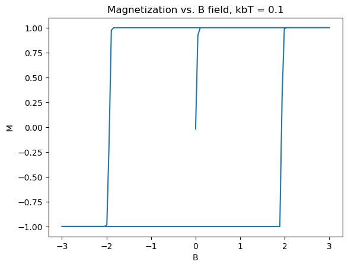 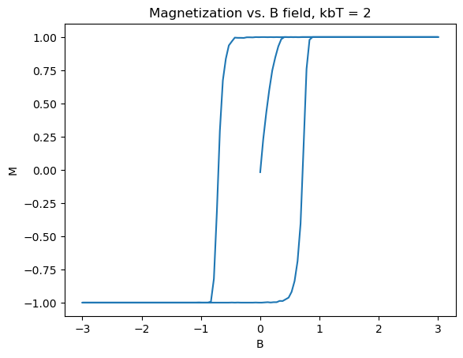 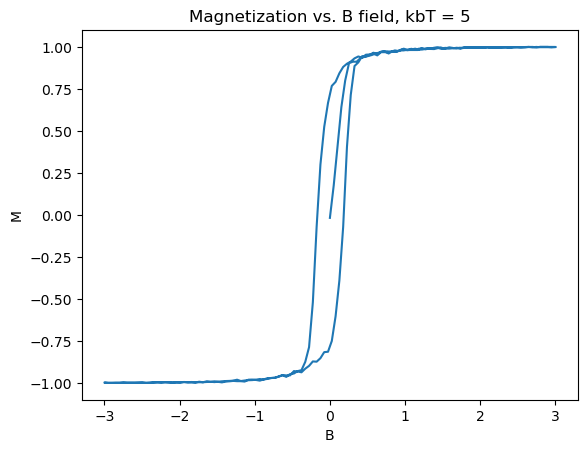 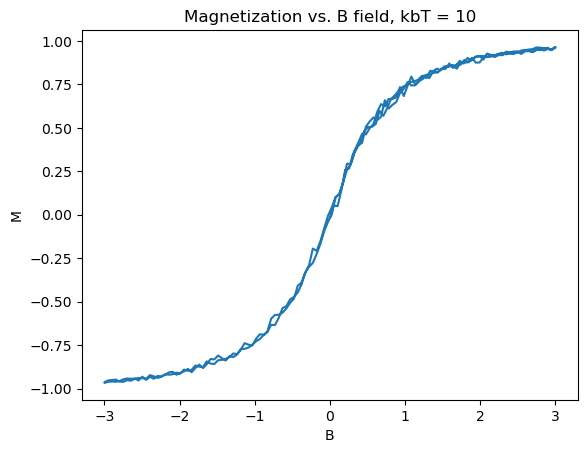
Several really nice features were captured in these graphs. First of all, the graphs match what theory tells us should happen, as in Section 2. Specifically, as the B field increases, the material starts from zero magnetization, until it is fully magnetized. Then upon, bringing B back down and past zero, the spins take an extra amount of energy to flip, as they are already in a stable state due to the exchange constant biasing them to point in the same direction. The same logic applies to the reverse direction, with increasing B field. Another nice feature is the emergence of paramagnetism at high temperature, and the overall shrinking of the size, indicating that the Curie temperature is somewhere around \(k_bT_c \approx 10eV\). In the 3D limit, ferromagnets act similar to this, forming the basis for many memory storage applications.
Next, a real world material was modeled in an attempt to capture the correct Curie temperature behavior. While ferromagnetism has been observed in nature for centuries, a monolayer (2D) ferromagnet is a recent experimental discovery, only occurring in 2017 \(^{[2]}\). The first monolayer ferromagnet to be found was CrI\(_3\). While 2D magnets are theoretically prohibited due to the Mermin-Wagner theorem, CrI\(_3\)’s crystal structure introduces a magnetic anisotropy to the Hamiltonian, which allows CrI\(_3\) to be a ferromagnet. The 2017 paper observed a Curie temperature of \(T_c = 45\)K, and another later paper reported an exchange interaction term of \(J = -1.44\)meV, the basis for the numbers in the first calculation\(^{[3]}\).
The first issue in modeling this was accounting for the honeycomb lattice of CrI\(_3\), which was not easy. The array involved in storing the states of every atom and all of the functions that work with it had to be rethought. Another issue was figuring out how to plot the array. Eventually a solution in which a unit cell that tiled a hexagonal plane was found. Since every distance in the monolayer honeycomb lattice is the same, this meant that the actual energy calculation was not made that much more complicated.
First, a simulation was run to ensure that the crystal lattice was tiled correctly, and that the system was able to reach the ground state magnetization. Chosen values were: 1000000 timesteps, B = 5T, and T = 20K and a lattice size of \(25\times25\). While the lattice may appear slightly squashed in the horizontal direction, this is only due to python scaling each axis to the same length when plotting the data.
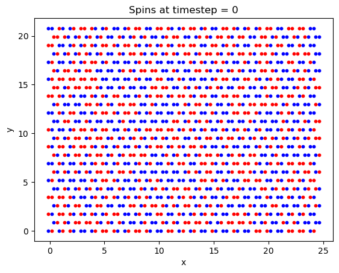 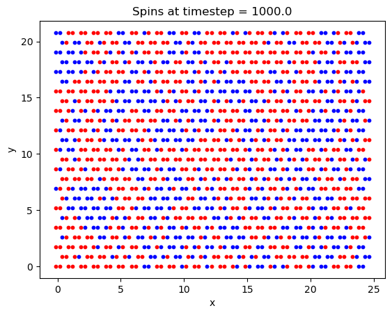 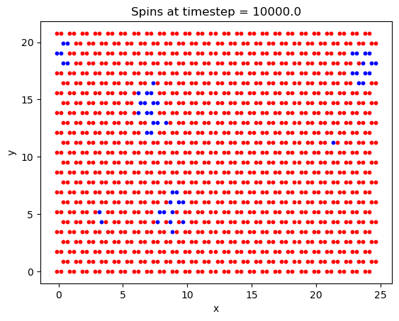 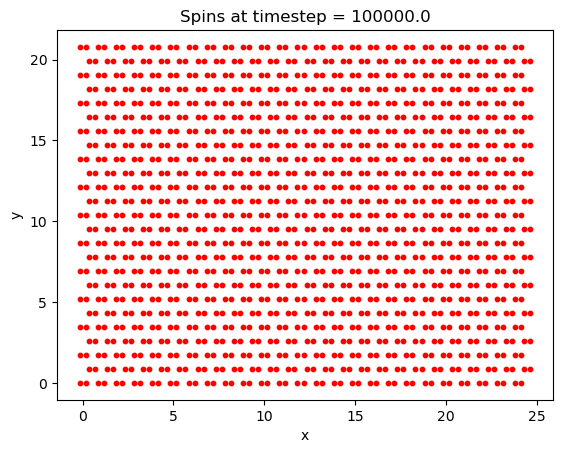
Finally, the Curie temperature was estimated for CrI\(_3\). On a run with 2e6 timesteps, a \(100\times100\) lattice, and a field B = 5T, the following plot was generated:
This is really a phenomenal plot. While the Curie temperature appears to be overestimated, the plot is really quite close, with a predicted \(T_c\) of around 50K, compared to the experimentally reported value of 41K. This is quite unexpected, as the spins are essentially being treated classically.
Overall, the Monte-Carlo solution for the 2D Ising model proved to be moderately successful. While qualitative features of the Hysteresis plot were nearly perfectly reproduced, the model struggled to achieve a satisfying answer for the Curie temperature. Because the magnetization didn’t transition to zero faster as temperature increased, getting an accurate value for \(T_c\) was difficult, and the reason as to why it transitioned so slowly is one of the great mysteries of the code. Interestingly, the model seemed to consistently overestimate the Curie temperature from what it should have been. This seems to imply that the true minimum in energy was not found, as the temperature should have been able to go lower before perturbing the ordered ground state. One possible reason for this is that only nearest neighbors were considered. In honeycomb lattices specifically, the atoms that are not nearest neighbors could still have a significant effect. In fact the exchange interaction term values for some non-nearest neighbors are given in various papers, and could be the aim of future code. With these terms added in, a fully magnetized material would be able to achieve a lower energy, implying a lower Curie temperature too in this model.
There are other possible effects causing error, too. First and foremost this is a simplification of a much more complicated problem; spin dipoles don’t simply point up or down, and this model hasn’t even began to consider quantum effects. Furthermore, the CrI\(_3\) molecule is not isolated in one place in space, as it was modeled. Figure 5 clearly shows how the Iodine atoms orient themselves in space, where electrons could also be localized. Despite all this, the \(T_c\) calculation’s were still fairly accurate. The prediction for \(T_c\) for CrI\(_3\) was within 10K of the correct value.
[1] E. Kirkland, Class notes (lecture 11)
[2] Huang, B., Clark, G., Navarro-Moratalla, E. et al. Layer-dependent
ferromagnetism in a van der Waals crystal down to the monolayer limit.
Nature 546, 270–273 (2017). https://doi.org/10.1038/nature22391
[3] Michele Pizzochero, et. al. 2D Materials, IOP Publishing, 7 035005
(2020). DOI 10.1088/2053-1583/ab7cab
[4] David J. Griffiths. Introduction to Electrodynamics, Cambridge
University Press, 4th Edition, 2013
[5] Landau, Paez, and Bordeianu. A Survey of Computational Physics:
Introductory Computational Science, Princeton University Press,
2010
[6] Lectures delivered by Bruce Kusse for AEP 4230: Statistical
Thermodynamics
[7] finalproject.py
[8] Guo-Xiang Chen, et. al. Electronic structure and magnetic properties
of CrI3 monolayer doped by rare earth metal atoms, Journal of Physics
and Chemistry of Solids, Volume 187, (2024), 111838, ISSN 0022-3697,
https://doi.org/10.1016/j.jpcs.2023.111838.
[9] Huang, K. (1963) Statistical Mechanics. John Wiley and Sons, Inc.,
London.
[10] Nisticó, R, et. al. Magnetic Materials and Systems: Domain
Structure Visualization and Other Characterization Techniques for the
Application in the Materials Science and Biomedicine, January 2020,
Inorganics, 8(1):6, DOI: 10.3390/inorganics8010006